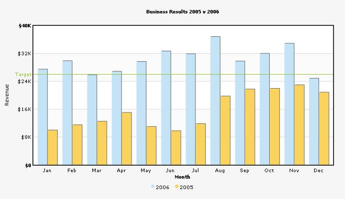

Multi-Series Chart XML |
Multi-series charts are charts where you compare multiple series of data. Like, in our previous example we had seen how to plot a chart indicating Monthly sales summary for 1 year. This data belonged to one particular series, that is for the year say, 2005. Now, if you need to compare the data for 2 or more years, you'll have to use multi-series charts. Using multi-series charts, you can compare data for 2 or more number of series. A simple 2D multi-series chart looks as under: |
|  |
| As you can see above, here we are comparing
data for the year 2006 and 2005.
The XML for this chart looks as under: |
| <graph caption='Business Results 2005 v 2006' xAxisName='Month' yAxisName='Revenue' showValues='0' numberPrefix='$' decimalPrecision='0' bgcolor='F3f3f3' bgAlpha='70' showColumnShadow='1' divlinecolor='c5c5c5' divLineAlpha='60' showAlternateHGridColor='1' alternateHGridColor='f8f8f8' alternateHGridAlpha='60' > <categories> <category name='Jan' /> <category name='Feb' /> <category name='Mar' /> <category name='Apr' /> <category name='May' /> <category name='Jun' /> <category name='Jul' /> <category name='Aug' /> <category name='Sep' /> <category name='Oct' /> <category name='Nov' /> <category name='Dec' /> </categories> <dataset seriesName='2006' color='c4e3f7' > <set value='27400' /> <set value='29800' /> <set value='25800' /> <set value='26800' /> <set value='29600' /> <set value='32600' /> <set value='31800' /> <set value='36700' /> <set value='29700' /> <set value='31900' /> <set value='34800' /> <set value='24800' /> </dataset> <dataset seriesName='2005' color='Fad35e' > <set value='10000'/> <set value='11500'/> <set value='12500'/> <set value='15000'/> <set value='11000' /> <set value='9800' /> <set value='11800' /> <set value='19700' /> <set value='21700' /> <set value='21900' /> <set value='22900' /> <set value='20800' /> </dataset> <trendlines> <line startValue='26000' color='91C728' displayValue='Target' showOnTop='1'/> </trendlines> </graph> |
| Brief Explanation |
| If you've already gone through the single series XML structure, you'll find notable differences between the two XML structures. There is the new <category> and <dataset> elements and the <set> elements now just contain the value attribute. However, if you're still unaware of the FusionCharts XML structure, let's get to the basics first. The <graph> element is the main element of any FusionCharts XML document - it represents the starting point and the ending point of data. The <graph> element has a number of attributes which helps to manipulate the chart. You can find the full list of attributes in "Chart XML Reference" of each chart. In the most general form, attributes have the following form: The attributes can occur in any order and quotes can be single or double like xAxisName='Month'. However, you need to make sure that a particular attribute occurs only once for a given element. Next to the <graph> element is <categories> element and its child <category> elements. Each <category> element represents a name on the x-axis. The <category> elements need to be defined for all the multi-series charts before you can define the data. For example, in our chart, the categories are the month names (Jan, Feb, Mar ...) as we're plotting a chart to show monthly sales summary for two consecutive years. Now, in a multi-series chart, each series of data (i.e., each set of data) needs to be enclosed between a <dataset> element. Like in our example, we're plotting a chart showing the monthly sales trend for 2 different years - the first dataset element's childnodes would be the data for the year 2006 and the second one for 2005. Depending on the chart type, there are a number of properties which you can define for each <dataset> element, which you can see in "Chart XML Reference" of that chart. Moving on, each <set> element (which is a child element of the <dataset> element) represents a set of data which is to be plotted on the graph and determines a set of data which would appear on the graph. A typical <set> element would look like: <set value="27400"/> |
| You should note that the number of <category> elements should be equal to the number of data rows in each data sets, i.e., if you mention twelve categories (twelve months), the data for both years (2005 & 2006) should also contain twelve <set> elements (twelve rows of data). |
Next we have the <trendLines> element. Using this function of the chart, you could draw custom lines on the chart to represent a trend. For example, in our above XML, we have defined a line at 26000 to represent the Target sales for the period. |